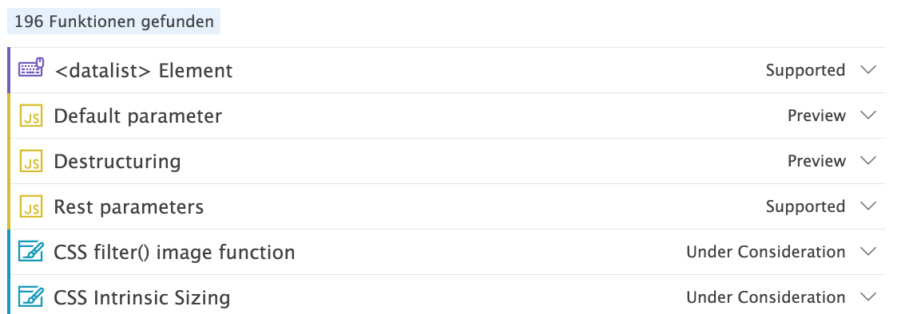

name: cover background-image: url(assets/img/background.png) # JSConf.eu 2015 Recap .slide-cover[ JSConf.eu 2015 Recap<br> Web&Wine<br> Michael Jaser<br> ] --- layout: true class: center, middle .slide-header-left[ JSConf.eu 2015 Recap ] .slide-header-right[ Web&Wine ] --- <img src="assets/img/peerigon.svg" width="500"/> --- # Opening - https://www.youtube.com/watch?v=lJ1kY-CSpBk - WebMidi - WebAudio --- # [What it's like to live on the Edge](http://2015.jsconf.eu/speakers/kai-jaeger-what-it-s-like-to-live-on-the-edge.html) <img src="assets/img/Microsoft_Edge.svg" style="height:25vh"/> --- >Microsoft Edge - formerly known as ‘Project Spartan’ - will be the default browser for Windows 10 and promises to be faster and leaner than the hated IE <small>Source: http://www.theguardian.com/technology/2015/apr/30/spot-the-difference-internet-explorer-is-dead-long-live-microsoft-edge </small> --- # Microsoft in der Zwickmühle - (große) __Firmenkunden__: Stabilität und Support für alte Projekte - __Webentwickler__: Neue Features --- # Microsoft Edge - IE finally done right... - Legacy wurde über Bord geworfen - IE wird noch aus Legacy Gründen weiterentwickelt --- # ES2015 <img src="assets/img/browser_kangex.png"/> <small>Source: https://kangax.github.io/compat-table/es6/#edge13</small> --- # HTML5 Test <img src="assets/img/html5test.png"/> <small>Source: https://html5test.com</small> --- # Status  <small>Source: https://dev.modern.ie/platform/status/</small> --- # ES 2015 - wird gefeiert von der Community - viele verwenden Babel.js --- # [Disconnected Networking](http://2015.jsconf.eu/speakers/razvan-caliman-disconnected-networking.html) --- # Audio ## Ultraschall - http://borismus.github.io/sonicnet.js/emoticons/ - https://github.com/borismus/sonicnet.js ## Dopplereffekt - https://github.com/DanielRapp/doppler --- # Licht - Theremin: http://localhost:9001/webaudio/theremin.html (Firefox only) - Morsecodes --- # Sensors - einheitliche Sensors API - https://github.com/w3c/sensors --- # WebRTC / [Ho to grow your own Babel fish](http://2015.jsconf.eu/speakers/szymon-nowak-how-to-grow-your-own-babel-fish.html) - [The year of the peer-to-peer web](http://2015.jsconf.eu/speakers/thomas-gorissen-the-year-of-the-peertopeer-web.html) - gute Unterstützung in modernen Browsern (außer Apple) - https://webrtc-translate.herokuapp.com/rooms/a5530a26-dfd7-4e04-9053-656504071f46 - dezentrales Web! --- # [Dependency Hell Just Froze Over](http://2015.jsconf.eu/speakers/stephan-boennemann-dependency-hell-just-froze-over.html) - Dependencies durch SemVer und Automation in den Griff kriegen - Dienst greenkeeper.io um Dependencies aktuell zu halten --- # updatr <img src="assets/img/updtr.jpg" style="height:30vh"/> - https://www.npmjs.com/package/updtr --- # [Domo Arigato Mr. Roboto](http://2015.jsconf.eu/speakers/sam-richard-domo-arigato-mr-roboto.html) - https://speech-to-text-demo.mybluemix.net/ - http://natural-language-classifier-demo.mybluemix.net/ --- - __Cognitive Computing__ APIs - IBM Watson - leicht in Anwendungen zu integrieren - Datenschutz? Preise? <small>http://www.ibm.com/smarterplanet/us/en/ibmwatson/developercloud/apis</small> --- # [The Mobile Web is a Contender](http://2015.jsconf.eu/speakers/surma-surma-the-mobile-web-is-a-contender.html) - Mobile Web is rising - viele Apps basieren im Hintergrund auf Web-Apps --- # Mobile Web Features - ServiceWorker - Push Notifications - Offline Storage Unterstützt von _Chrome_ und (teilweise) _Firefox_. __Aber:__ Apple spielt nicht mit. --- # [The illusion of time](http://2015.jsconf.eu/speakers/denys-mishunov-illusion-of-time-when-60-seconds-is-not-1-minute.html) - users don't care about absolute numbers and statistics though - performance isn't just about statistics - it's about the user's perception <small>http://www.smashingmagazine.com/2015/09/why-performance-matters-the-perception-of-time/</small> --- - active phase: brain is actively engaging in activity - passive phase: brain is just waiting for things to be over - overestimation of waiting time by 36% - people hate passive phase waiting --- And so much more...